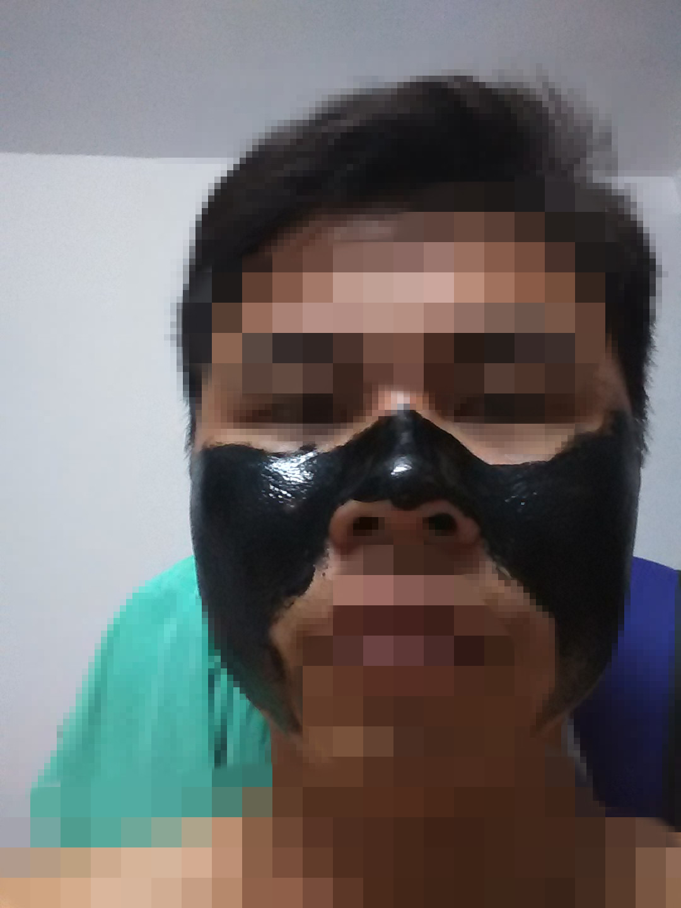
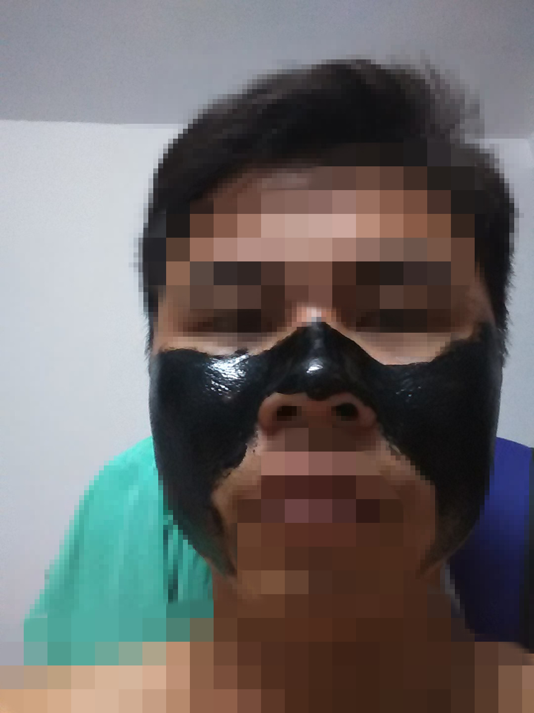

内心的改变——难
发布时间：2014-10-29
人倒霉的时候就是很倒霉。到底是我真的天意要倒霉呢？不是的，是性格的问题。不同的性格会做不同的事情。就如今晚一样，遇到大事情的时候不知道做什么，生怕这样不行，生怕那样不行。结果把事情给搞砸了。这样的例子很多，入期中考试考得好，期末考试往往不好。小测验很好，大测验就不行了。一句话压力承受能力不行。就如下面这张图一样，我黑下去吗？做错能改，才是好；但是也不能过于苛求。
重新开始写博客，居然是写这类的东西。

发布时间：2014-10-29
人倒霉的时候就是很倒霉。到底是我真的天意要倒霉呢？不是的，是性格的问题。不同的性格会做不同的事情。就如今晚一样，遇到大事情的时候不知道做什么，生怕这样不行，生怕那样不行。结果把事情给搞砸了。这样的例子很多，入期中考试考得好，期末考试往往不好。小测验很好，大测验就不行了。一句话压力承受能力不行。就如下面这张图一样，我黑下去吗？做错能改，才是好；但是也不能过于苛求。
重新开始写博客，居然是写这类的东西。
